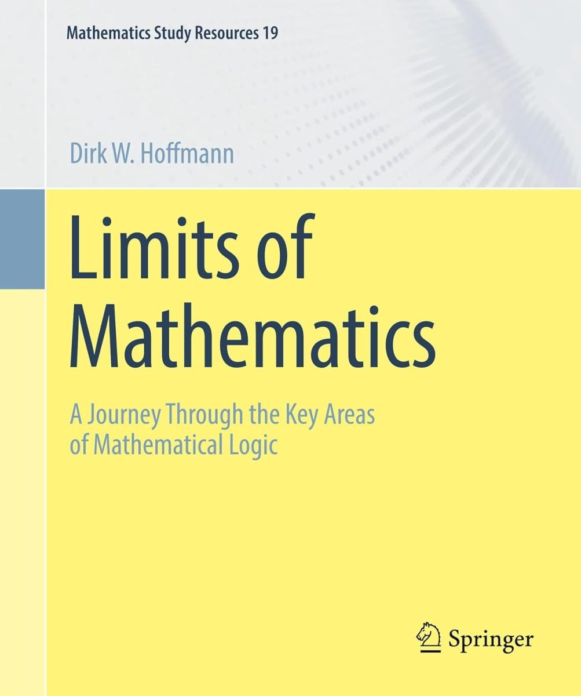

Hoffmann, Limits of Mathematics

In the last couple of years, Dirk Hoffmann has published English translations of two of his books which originally appeared in German. In 2024, he gave us Gödel’s Incompleteness Theorems (Springer), which I will discuss in a future post. And then last year he published Limits of Mathematics: A Journey Through the Key Areas of Mathematical Logic (Springer), translating the third edition of his Grenzen der Mathematik.
Spoiler: the Gödel book is much the better. The more recent book, by contrast, is not to be recommended.
Limits appears in a series titled ‘Mathematics Study Resources’ and aims – to quote Hoffmann’s Preface – “to present the concepts, methods, and findings of [mathematical logic] as clearly as possible without sacrificing depth.” He adds “Wherever appropriate, I have motivated definitions and theorems with examples and placed them in their factual and historical context through numerous side notes. Additionally, I have chosen to present theorems that play only a marginal role in a sketchy manner or to indicate where an elaborated proof can be found. In this sense, the book cannot replace the formally precise literature in mathematical logic in all aspects – and it does not intend to.”
Hoffmann is trying, then, to write a particularly reader-friendly introduction, with sufficient depth but without unnecessarily distracting detail. An admirable ambition. So I wanted to take a look at this book with a view to seeing whether it should get a mention in whole or in part in the next iteration of the Study Guide.
What does the book discuss? Chapter 1, ‘Historical Notes’ recounts a familiar story, with the usual characters, a foundational crisis, the birth of set theory, Hilbert’s Programme, Gödelian troubles. In Chapter 2, ‘Formal Systems’, we meet the propositional calculus and first-order predicate calculus. Chapter 3, ‘Foundations of Mathematics’, has substantial sections on Peano Arithmetic and Axiomatic Set Theory. Chapter 4 is called ‘Proof Theory’ but is in fact about Gödel’s incompleteness theorems. Chapter 5 is on ‘Computability Theory’, and introduces various models of computation, and discusses e.g. the Halting Problem, Rice’s Theorem and Hilbert’s Tenth Problem.
These first five chapters are all about sixty pages long. There follows a much shorter Chapter 6 which departs in an interesting way from the usual introductory menu of topics by discussing ‘Algorithmic Information Theory’, talking about Chaitin’s work and his incompleteness theorem. Then the final Chapter 7, ‘Model Theory’ is back on the familiar tracks, mentioning compactness, the L-S Theorem, non-standard models of PA, Skolem’s Paradox and (more surprisingly) a little about Boolean-valued models.
How well does all this work? Let’s distinguish the more formal expository material from the surrounding chat. For some of the chat should strike anyone as decidedly below par.
For example, how about this on p. 1: “Until the beginning of the twentieth century, no one seriously doubted that nature follows elementary rules.”? Really? How about that co-author of what was the standard text on physics in German around the beginning of the nineteenth century, Georg Christoph Lichtenberg – who frequently remarks on our tendency to try to impose order and laws onto what may simply be random, messy, non-systematic natural phenomena.
How about this on p. 36: “Russell and Whitehead created a monumental work that far surpassed Frege’s account in scope and depth.” Really? Isn’t the usual judgement just the opposite, that Principia marks a significant step down in rigour from Grundgesetze, with skipped steps, inadequately defined terms, etc.?
For a different sort of mishap, how about this on p. 376: “At present, there is little discussion on the philosophical significance of [Skolem’s] paradox.” Really? Was the Stanford Encyclopaedia article (not to mention all the papers it refers to) invisible?
It would be boring to continue: but Hoffmann’s handwaving asides are not the most reliable guide to the wider context of the technical material in the book.
But what about the main events, expounding some core mathematical logic? Obviously, with a book of this kind, aiming to convey some of the Big Ideas without too much distracting detail, it is a judgement call what to include, at what level. I can only report that I don’t find Hoffmann’s choices particularly well judged.
Take the sections on the propositional calculus. On p. 80, the “syntax of propositional logic” is defined like this:
Let \(V = \{A_1, A_2, A_3 , \ldots\}\) be a set of variables. The set of propositional formulas over V is recursively defined:
■ 0 and 1 are formulas.
■ Each variable in \(V\) is a formula.
■ If ϕ and ψ are formulas, so are (¬ϕ),(ϕ ∧ ψ),(ϕ ∨ ψ),(ϕ → ψ), …
But then Hoffmann immediately refers to 0 and 1 here as truth-values (and this is the first serious occurrence of “truth value” in the book)! Which is just to engender confusion between the falsum and verum as formulas and the values which are their interpretations. To be sure, we can take truth-values to be whatever we like; but taking them to be formulas is certainly not a wise move to make for beginners.
When it comes to a proof-system for propositional logic, we get a linear axiomatic calculus. Hoffmann does note on p. 94 that alternative axiomatisations in the same style are possible. But there is not a whisper about natural deduction, the sequent calculus or any other proof-system. By all means concentrate on one style of proof-system to make various points (e.g. about completeness). But if the aim is to to present “the concepts, methods, and findings of mathematical logic” in an introductory survey, then we might expect to be told something about the breadth of logical options here. As it is, we get four pages of tedious axiomatic proofs but nothing e.g. about expressive completeness. And as for completeness, all we get is “… all universally valid formulas are indeed derivable from the axioms. We do not want to delve deeper into the more involved details here and refer the interested reader to the elaborated proofs in [Kalmár’s original paper!!] or [Mendelson (also Kalmár-style)] instead.” So not a hint about the lovely idea of a Henkin/Hintikka proof.
This is not a helpful introduction to propositional logic. And similarly when it comes to predicate logic. In the final chapter where we might expect at least to be introduced to the main ideas of a completeness proof, the reader will again draw a blank. Yet Hoffmann is shortly going to be talking about non-standard models of PA and ultrafilters … a reader who can cope with that could certainly cope with a friendly exposition of the leading ideas in a proof of the crucial completeness theorem.
Moving on to the chapter on Peano arithmetic and on set theory, I again can’t really recommend either treatment.
On arithmetic we get a historical box introducing Peano’s own axioms with the formal statement of his induction axiom given as schema (compare the top of p. 134 with box on p. 135 and the immediate commentary). This is odd, to say the least, as back on p. 110 and following, we have in fact already met second-order logic, so we actually have available the apparatus to formalize Peano’s second-order axiom (and that’s what Hoffman must actually mean as he immediately mentions Dedekind’s categoricity theorem). The careful reader will be unnecessarily puzzled. We then get four pages of boring proofs in first-order PA (which is oddly presented with all the axioms given as schemas) – but someone new to formal arithmetics might have been better served by some mention of variant arithmetics with different strengths of induction available.
On set theory we get presented with the ZFC axioms, clearly enough explained. But as for motivation? There is nothing about the cumulative hierarchy, and the preamble to the chapter on p. 141 could well leave the reader with the impression that imposing a hierarchy of levels on sets is “widely considered obsolete”.
To be fair, Hoffmann has put admirable effort into making his accounts of formal arithmetic and formal set theory pretty accessible. But it has to be said that there are many more well-balanced accounts to be had out there.
My impression of some of the later chapters is much the same. They are quite good in parts (perhaps particularly the computability chapter) but better options are available – though the distinctive chapter on algorithmic information theory has few competitors (and I’ll want to revisit that for the next version of the Study Guide). I can imagine some weaker students finding the book helpful preliminary reading, but overall I can’t be rushing to recommend it.
Tankut Beygu comments: Overall, Hoffmann’s textbooks are quite good at accessibility: they are markedly clear in design, example-rich, and engaging to read. These qualities make them particularly valuable for self-study and for readers seeking an intuitive entry into complex subjects. His strong emphasis on diagrams and visual learning—methods more commonly associated with earlier stages of education—can feel out of place in expositions of relatively advanced subjects. Nonetheless, diagrammatic expositions have pedagogic merit on their own and also make the books reader-friendly. While his effort to include historical pointers is commendable and often helpful for orientation, his judgements on historical matters are unnecessary and Hoffmann could do just as well without them. So, Hoffmann’s books are perhaps best used in tandem with more rigorous and scholarly texts.